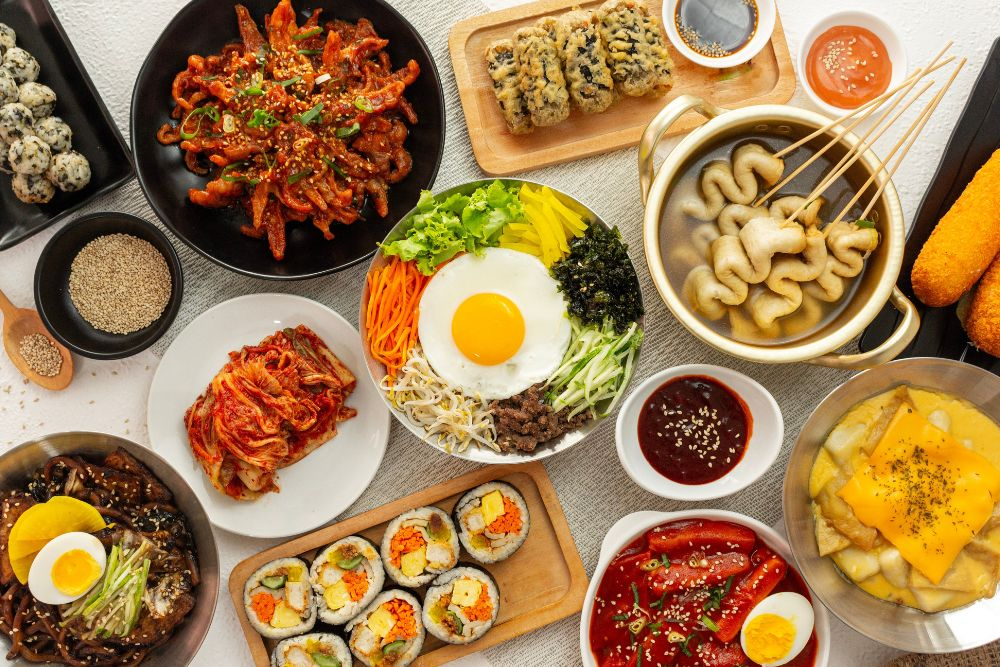
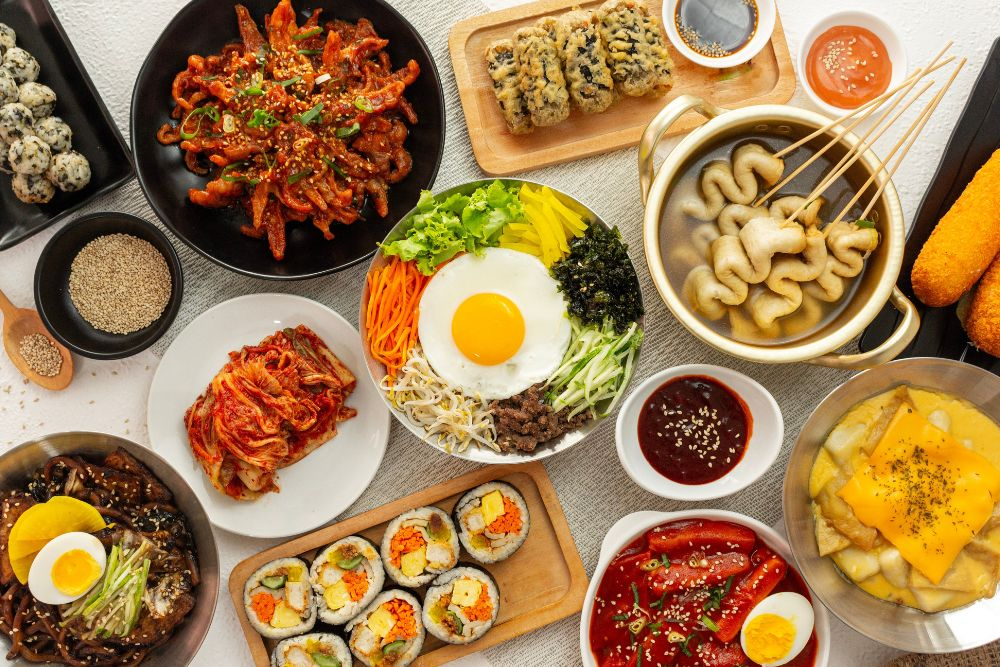

Bem-vindo ao Mundo da Culinária
A culinária é uma arte que combina habilidades técnicas, criatividade e conhecimento para criar pratos incríveis e satisfatórios.
A culinária é uma arte que combina habilidades técnicas, criatividade e conhecimento para criar pratos incríveis e satisfatórios.

Massas são alimentos feitos a partir de uma mistura de farinha com água, podendo incluir ovos, sal e outros ingredientes.
Saiba Mais
Os doces mais famosos do mundo incluem o brigadeiro, o pastel de nata, o tiramisu e o creme brûlée.
Saiba Mais
Existem dois tipos principais de bebidas: alcoólicas e não alcoólicas. As bebidas alcoólicas incluem destilados.
Saiba Mais